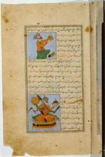

Zakariya' b. Muh
Al-Qazwini (gestorven in 1283) is de auteur van twee werken, een Kosmografie en een Geografie. Beide zijn in het Arabisch geschreven. Van de Kosmografie bestaat een aantal vertalingen, en met name die in het Perzisch zijn vaak rijkelijk verlucht met illustraties. Het hier getoonde Leidse handschrift bevat er meer dan tweehonderd. Al-Qazwini geldt als de grootste Arabische kosmograaf. Zijn interesse was zeer breed: astronomie, geografie, geologie, mineralogie, botanie, zoölogie en etnografie. Hij was een goed compilator van de werken van zijn voorgangers en zijn werk geldt als een synthese van de stand van de wetenschap in zijn tijd. Zijn grote invloed op latere kosmografen blijkt uit de talrijke bewerkingen en vertalingen die zijn Kosmografie ten deel zijn gevallen. Zowel de Arabische als de andere versies ervan hebben een gecompliceerde handschriftelijke overlevering, en er bestaat geen bruikbare kritische tekstuitgave.
Ruwweg valt Al-Qazwini's werk uiteen in twee delen. Het eerste behandelt de hemelse zaken: de hemellichamen en de bewoners van de hogere sferen, de engelen. Het bevat ook een hoofdstuk over chronologie. De hemellichamen worden zowel van astronomisch (afmetingen en afstanden) als van astrologisch standpunt (invloed op het ondermaanse bestaan) behandeld. Het tweede deel van het boek gaat over aardse zaken: de vier elementen (aarde, water, lucht en vuur), de natuurlijke historie van de drie rijken (mineraal, vegetaal en animaal), en ten slotte de kroon op de schepping: de mens.
De miniaturen van het Leidse handschrift zijn uitgevoerd in een provinciale stijl, die
verwant is aan de Is
Literatuur
- C. Brockelmann, Geschichte der arabischen Litteratur. Leiden 1937-1949. 5 dln, G I, p. 481.
- F. Saxl, ‘Beiträge zu einer Geschichte der Planetendarstellungen im Oriënt und Okzident’, in: Der Islam, 3 (1912), p. 151-177.
- M. Streck, ‘K
azwini‘, in: Enzyklopaedie der Islam. Geographisches, ethnographisches und biographisches Wörterbuch der muhammedanischen Völker. Tl. 2. Leiden 1927, p. 900-904. - C.A. Storey, Persian literature. A bio-bibliographical survey. Vol. II, pt. 1. London 1958, nr. 188.
- Manfred Ullmann, Die Natur- und Geheimwissenschaften im Islam. Leiden 1972.
- T. Lewicki, ‘K
azwini‘, in: The Encyclopedia of Islam. New ed. Vol. IV. Leiden 1978, p. 864-867. - Vergelijk: Norah M. Titley, Miniatures from Persian manuscripts. A catalogue and subject index of paintings from Persia, India and Turkey in the British Library and the British Museum. London 1977.
| vorige pagina | top pagina |